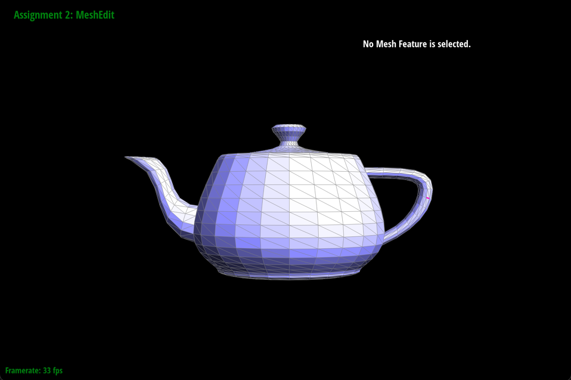
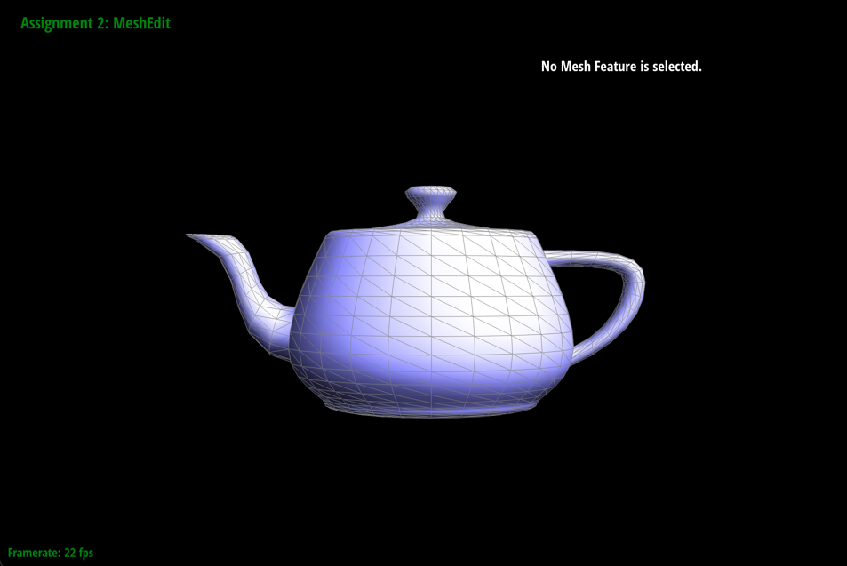
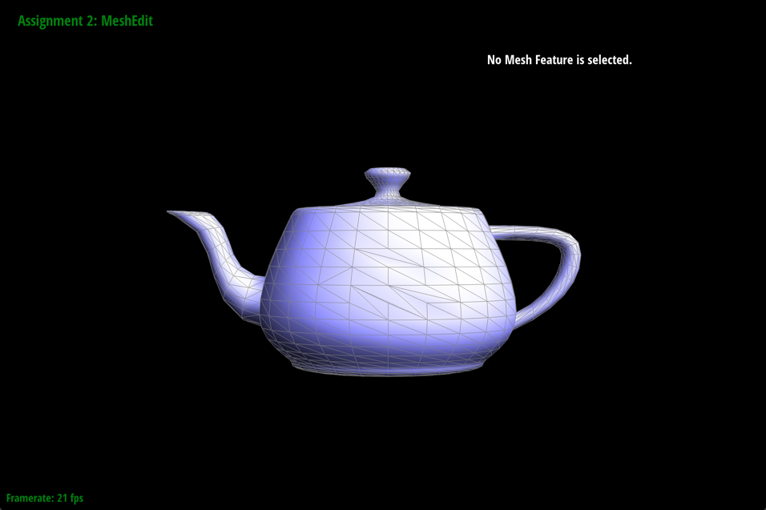

Overview
TEXT HERE
Section I: Bezier Curves and Surfaces
Part 1: Bezier Curves with 1D de Casteljau Subdivision
Briefly explain de Casteljau's algorithm and how you implemented it in order to evaluate Bezier curves.The de Casteljau algorithm gives us a set of cascading coefficients which eventually allows us to find a set of associated control points. Continual recursive interplation of these control points allows us to finally find a point which lies on the Bezier curve. In order to implement the recursive step for the algorithm here, I implemented the evaluateStep function. This function takes in a vector of points. Then, I iterate through each of these points until I reach the second to last point and perform a linear interpolation using each point and the next point in the vector at the parameter t. This looks like multiplying the point by 1-t and adding that to the next point multiplied by t. Each calculated point at the next subdivision level is pushed to a new Vector2D which is then returned.
Take a look at the provided .bzc files and create your own Bezier curve with 6 control points of your choosing. Use this Bezier curve for your screenshots below.
YOUR RESPONSE GOES HERE
Show screenshots of each step / level of the evaluation from the original control points down to the final evaluated point. Press E to step through. Toggle C to show the completed Bezier curve as well.

|

|

|

|

|
Show a screenshot of a slightly different Bezier curve by moving the original control points around and modifying the parameter \(t\) via mouse scrolling.
Here is a slighty different Bezier curve. I have adjusted the original control points and have scrolled to adjust the t parameter so that the final point is at a different spot along the bezier curve.
Part 2: Bezier Surfaces with Separable 1D de Casteljau
Briefly explain how de Casteljau algorithm extends to Bezier surfaces and how you implemented it in order to evaluate Bezier surfaces.The de Casteljau algorithm extends to Bezier surfaces since we can treat 3d surfaces as consituted by 2d Bezier curves. As such, we can perform the algorithm on the points selected from these constitutive curves. As such, in order to implement it, I performed similar steps to part one for each row of points representing a curve in the nxn grid using the u vector. After this, I perform another set of evaluations on the vector resulting from evaluation of each of the n rows to yield a final point in accordance with the algorithm.
Show a screenshot of bez/teapot.bez (not .dae) evaluated by your implementation.
Section II: Triangle Meshes and Half-Edge Data Structure
Part 3: Area-Weighted Vertex Normals
Briefly explain how you implemented the area-weighted vertex normals.First, for any particular vertex, I iterated through all the neighboring vertices and appended them to a vector. After doing this, I iterated through each vertex in the vector, finding the difference vectors between them and the original vector. Any adjacent two of these vertices will have difference vectors which are sides of a triangle, meaning I can find the cross product of them to find the normal for the triangle area. I do this for every set of two vertices, continually adding them to a sum. I then divide this sum by its normal to find the area-weighted vertex normal.
Show screenshots of dae/teapot.dae (not .bez) comparing teapot shading with and without vertex normals. Use Q to toggle default flat shading and Phong shading.
|

|

|
Part 4: Edge Flip
Briefly explain how you implemented the edge flip operation and describe any interesting implementation / debugging tricks you have used.In order to implement the operation, I first assigned a new variable to each each meshelement in a simple mesh diagram connecting two triangles. This diagram can be extrapolated to nearly all mesh elements. Then I carefully listed the reassignments which would occur if an edge was flipped. I then reassigned each variable accordingly. All of this happens only if the edge is not on a boundary. If it is on a boundary, the function returns the input edge immediately.
Show screenshots of the teapot before and after some edge flips.
|
|

|
Write about your eventful debugging journey, if you have experienced one.
I did not have to debug anything for this function. Careful planning beforehand ensured that my initial implementation was the correct one.
Part 5: Edge Split
Briefly explain how you implemented the edge split operation and describe any interesting implementation / debugging tricks you have used.YOUR RESPONSE GOES HERE
Show screenshots of a mesh before and after some edge splits.
YOUR RESPONSE GOES HERE
Show screenshots of a mesh before and after a combination of both edge splits and edge flips.
YOUR RESPONSE GOES HERE
Write about your eventful debugging journey, if you have experienced one.
YOUR RESPONSE GOES HERE
If you have implemented support for boundary edges, show screenshots of your implementation properly handling split operations on boundary edges.
YOUR RESPONSE GOES HERE
Part 6: Loop Subdivision for Mesh Upsampling
Briefly explain how you implemented the loop subdivision and describe any interesting implementation / debugging tricks you have used.YOUR RESPONSE GOES HERE
Take some notes, as well as some screenshots, of your observations on how meshes behave after loop subdivision. What happens to sharp corners and edges? Can you reduce this effect by pre-splitting some edges?
YOUR RESPONSE GOES HERE
Load dae/cube.dae. Perform several iterations of loop subdivision on the cube. Notice that the cube becomes slightly asymmetric after repeated subdivisions. Can you pre-process the cube with edge flips and splits so that the cube subdivides symmetrically? Document these effects and explain why they occur. Also explain how your pre-processing helps alleviate the effects.
YOUR RESPONSE GOES HERE
If you have implemented any extra credit extensions, explain what you did and document how they work with screenshots.
YOUR RESPONSE GOES HERE
Part 7 (Optional, Possible Extra Credit)
Save your best polygon mesh as partsevenmodel.dae in your docs folder and show us a screenshot of the mesh in your write-up.YOUR RESPONSE GOES HERE
Include a series of screenshots showing your original mesh and your mesh after one and two rounds of subdivision. If you have used custom shaders, include screenshots of your mesh with those shaders applied as well.
YOUR RESPONSE GOES HERE
Describe what you have done to enhance your mesh beyond the simple humanoid mesh described in the tutorial.
YOUR RESPONSE GOES HERE